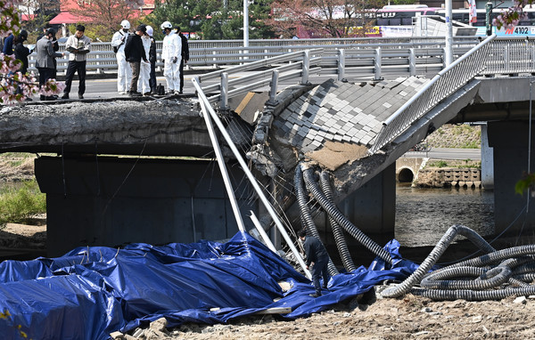
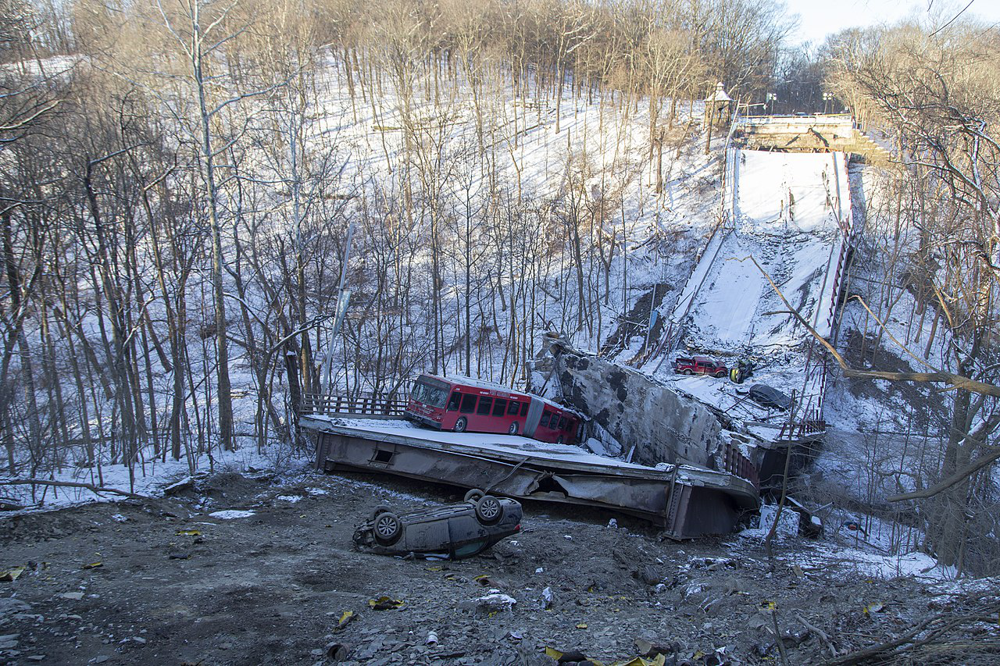
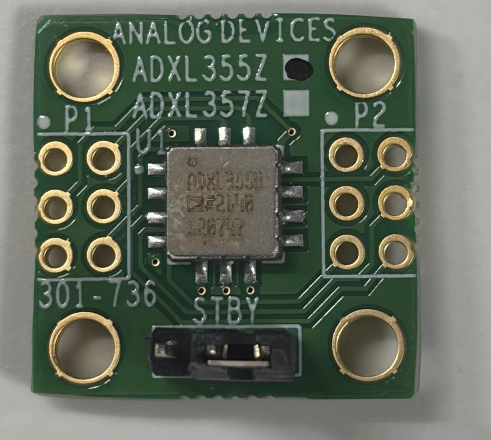
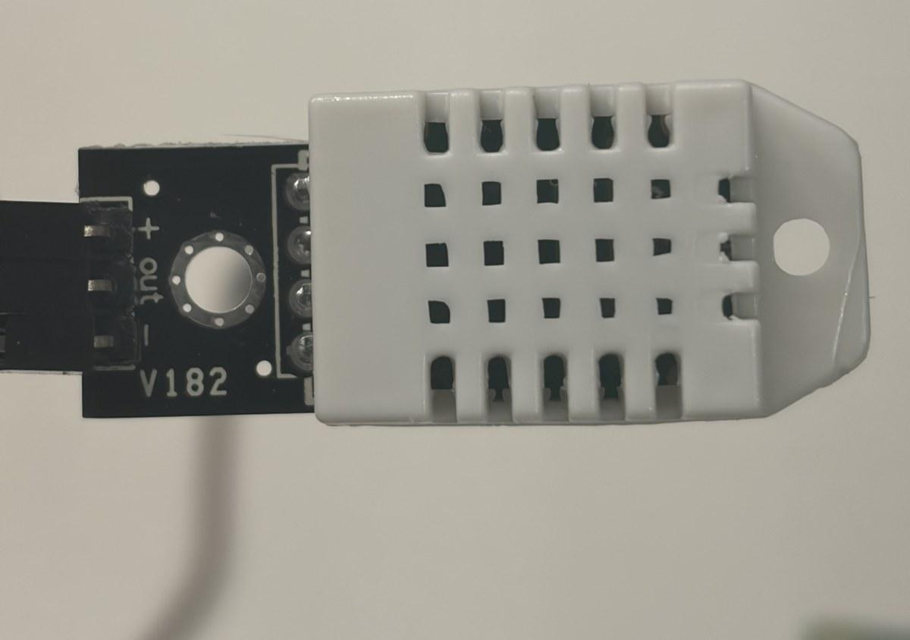
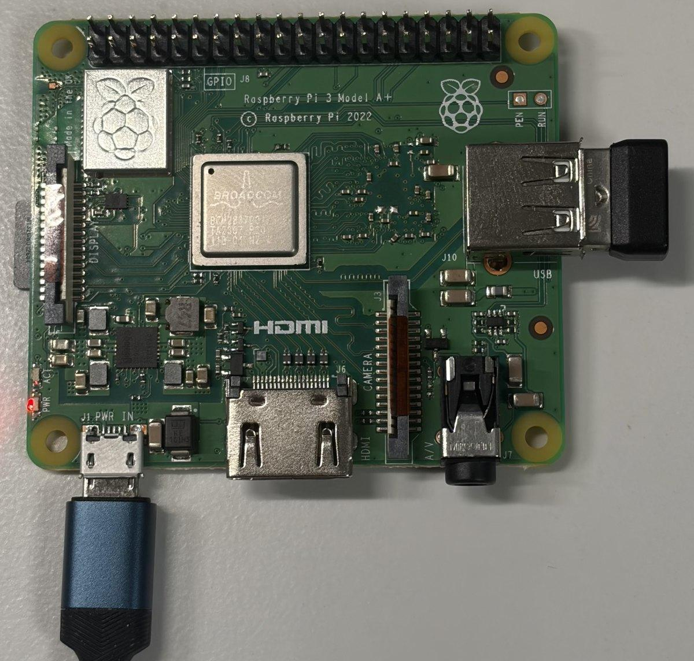
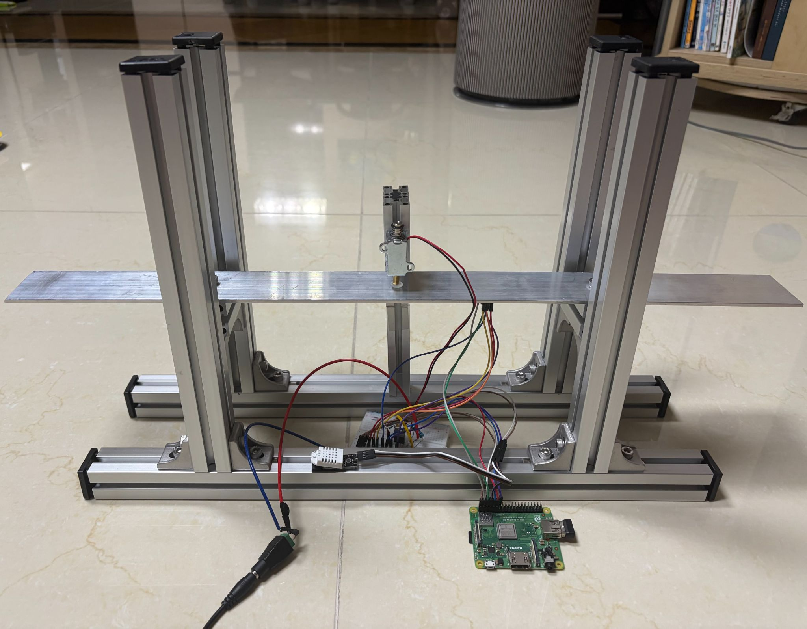
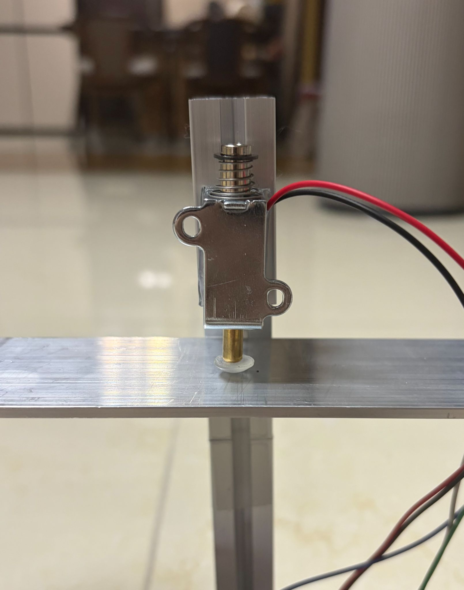
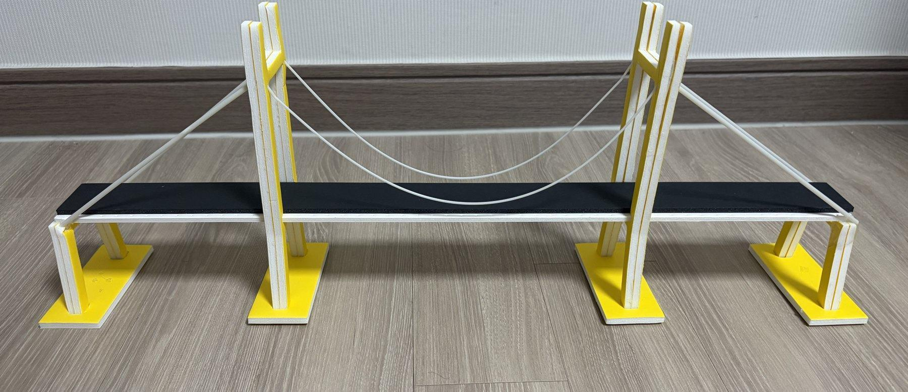
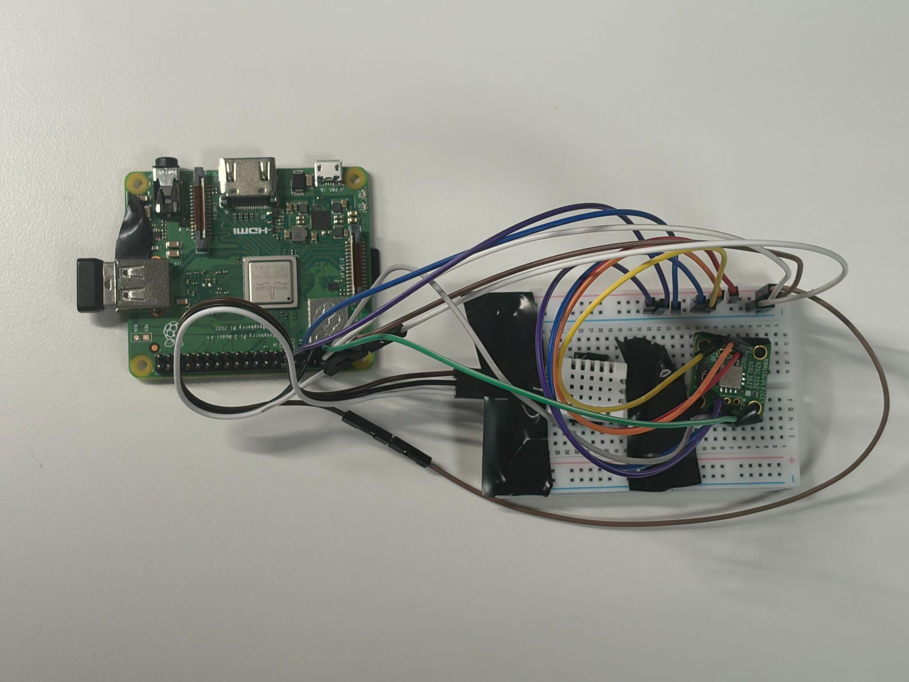

Korea Code Fair 2026 · Structural health monitoring
SENTRY
A low-cost bridge screening system that learns what weather changes, then flags what weather cannot explain.
Read the build storyProject brief
Continuous screening between inspections.
SENTRY is not a replacement for a structural inspection. It is a first-line filter for small and medium bridges: a sensor node watches vibration, models the change that temperature and humidity normally cause, and sends the remaining signal through an unsupervised anomaly detector. The output is an alarm, its severity relative to the threshold, and the feature group that drove it.
The 840/840 result is from the controlled aluminum bridge model, not a field claim about real bridges. SENTRY remains a screening prototype whose alarms must be confirmed by qualified inspection.
01 · Why it exists
The dangerous interval is the time between checks.
Periodic inspection is necessary, but corrosion, fatigue, and boundary-condition changes accumulate continuously. SENTRY began with a simple question: can a low-cost node make that interval observable?

Long-term corrosion and damage accumulated in the cantilever walkway. One person died and one was injured.

Corrosion had been documented, but repair was delayed before the bridge failed during service.
2025 national inventoryBridge facilities by class
37,543 total64.5%Class 3
Source: Korea Authority of Land & Infrastructure Safety
A monitoring blind spot
High-precision SHM does not scale down cheaply.
Permanent structural-health-monitoring systems usually depend on precision accelerometers, dedicated acquisition hardware, or optical sensing infrastructure. That makes sense for major bridges, but leaves a wide gap between visual inspection and high-end continuous monitoring.
Screen continuously, inspect precisely.
| Inspection type | Grade A | Grades B–C | Grades D–E |
|---|---|---|---|
| Regular safety inspection | At least once every 6 months | At least once every 6 months | At least 3 times per year |
| Precision safety diagnosis | At least once every 6 years | At least once every 5 years | At least once every 4 years |
02 · The system
One loop from impact to inspection priority.
The deployed path is intentionally legible: sense, clean, compensate, reconstruct, explain, repeat.
v2 continuous loopFrom a controlled impact to an inspection cue
~0.7 s refresh40 ms fixed solenoid pulse
500 Hz vibration plus T and RH
Eight log and ratio features
Remove healthy environmental drift
8→3→8 reconstruction error
Amplitude, band, or combined cue
Excite
A solenoid tapper applies a 40 ms pulse every five seconds at a fixed location.
Measure
ADXL355Z acceleration at 500 Hz plus nearby DHT22 temperature and humidity.
Transform
A two-second post-impact window becomes eight log- and ratio-normalized features.
Compensate
Regression removes the feature shift explained by the measured environment.
Detect
An 8→3→8 autoencoder reconstructs healthy residuals and scores the mismatch.
Explain
Feature-group contributions point toward amplitude change, a frequency band, or both.
v2 test geometry600 mm aluminum multi-span rig
repeatable setupMass W1x = 150 mm · 0/250/500 g
ADXL355Zx = 240 mm · underside
Auto tapperx = 300 mm · 40 ms
DHT22x = 400 mm · base rail
Mass W2x = 450 mm · 0/250/500 g
0150300450600 mm
v2 detectorLearn healthy residuals, score what remains
8→3→8 AEResidual input8 compensated features
Encoder8 → 5
Latent3 nodes
Decoder5 → 8
Error r||x − x̂||²
Healthyr ≤ τ
Review cuer > τ
| Component | Role | Design choice |
|---|---|---|
| ADXL355Z | 3-axis vibration sensing | Low-noise MEMS sensor for modal and energy features |
| DHT22 | Temperature and RH | Measures environmental drift near the accelerometer |
| Raspberry Pi 5 | Collection, control, analysis, UI | Runs the entire real-time path on one edge device |
| Aluminum model | Repeatable structural testbed | Sharper resonance and bolt-defined boundary conditions |
| Solenoid tapper | Automated excitation | Removes variation in strike force, location, and timing |





03 · Interactive build history
Follow the decisions, not just the dates.
Each point opens the evidence available at that moment: the hardware, the plots, what the result meant, and why the next version had to be different.
Research baseline
Question before hardware
First prove that environment can imitate structural change.
Nine months of undamaged openLAB bridge data tested whether temperature and humidity could push a healthy signal across an anomaly threshold.
deployment scaleMost facilities are not flagship bridges
202564.5%Class 3
What changed in my thinking
A detector cannot treat every frequency shift as damage.
Temperature compensation removed one false alarm in 263 evaluation samples. The effect was modest and humidity added no measurable benefit here, but it established the architecture: model the healthy environmental drift first, then detect what remains.
- Keep the compensation step testable and separate from the detector.
- Treat field alarms as screening candidates, never diagnoses.
- Build a controlled rig to obtain known structural-change labels.
| Model | Train | Evaluate | Train anomaly ratio | Evaluation FAR |
|---|---|---|---|---|
| Uncorrected AE | 263 | 263 | 1.1% | 1.90% |
| Temperature residual AE | 263 | 263 | 1.1% | 1.52% |
| Temperature + RH residual AE | 263 | 263 | 1.1% | 1.52% |
Version 1 · June
Proof of concept
Close the complete loop as quickly as possible.
A 55 cm foam-board bridge connected low-cost sensing, spectral features, environmental residuals, and an unsupervised reconstruction alarm for the first time.

Sensor → feature → residual → alarm
The edge pipeline worked end to end on inexpensive hardware.
Useful signal, weak repeatability
F1 improved from 0.075 to 0.370, but damage-window recall stayed low.
The rig dominated the result
Foam damping blurred peaks and hand strikes added more variance than the mass change.
Anomaly score over the 16-minute runmanual excitation · v1
8k6k4k2k0
0 min481216 min
No massLeft +100 gBoth sides +100 g
Compensation model metrics0–1 scale
FARPrecisionRecallF1
Power spectral density0–50 Hz
highlow
0 Hz1020304050 Hz
Both sides +100 gNo massLeft +100 g
Compared with the research baseline
The question moved from “is compensation useful?” to “can the hardware produce repeatable evidence?”
Good for testing environmental false alarms, but no controlled damage labels.
End-to-end validation became possible, while the rig itself exposed the next bottleneck.
Open the v1 setup and supporting diagnostics
v1 test geometry55 cm foam-board span
manual strikeLeft massL / 4 · 0 or 100 g
ADXL355ZL / 2 · underside
Right mass3L / 4 · 0 or 100 g
0L / 4L / 23L / 455 cm
v1 detectorFirst end-to-end reconstruction loop
healthy-only trainingFeature windowspectrum + bands
Encodercompress
Latenthealthy pattern
Decoderreconstruct
Lossanomaly score
Band error0–12 / 12–25 / 25–50
Alarmscore > threshold

Peak frequency by conditionHz
Mean anomaly scorecondition average
Residual error by frequency bandshare of total
6531
5342
355114
0–12 Hz12–25 Hz25–50 Hz
Normalized band energydistribution
1576
1479
1576
0–12 Hz12–25 Hz25–50 Hz
Version 2 · July
Controlled instrument
Make every structural change compete against a stable baseline.
The redesign replaced foam and hand strikes with an aluminum multi-span model, fixed boundary conditions, a 40 ms solenoid tapper, faster sampling, and a nonlinear autoencoder.
Version 1 → Version 2
The prototype became an experiment I could trust.
Every upgrade traces to a visible failure mode in v1 rather than a cosmetic preference.
| Dimension | v1 | v2 |
|---|---|---|
| Structure | Foam board · high damping | Aluminum multi-span · sharper resonance |
| Excitation | Manual strike | 40 ms auto tap every 5 s |
| Sampling | 200 Hz · 4 s window | 500 Hz · 2 s after impact |
| Experiment | 9 conditions | 27 conditions · 1,380 windows |
| Model | Raw-scale linear reconstruction | Log/ratio features · nonlinear 8→3→8 AE |
| Result | 18.8–29.7% damage recall | 100% damage recall · 0.998 F1 |
score ÷ threshold · log scaleStructural-change windows clear the decision line
27 conditions0.01×0.1×1× threshold10×100×
Healthy range
Mass · 500 g
Mass · 1,000 g
1 bolt loose
2 bolts loose
Representative medians across the environmental blocks. Threshold = 1.0×.
reconstruction-error shareDifferent changes leave different residual signatures
feature attribution83%14%
15%83%
51%46%
Amplitude / energy40–80 Hz ratioOther features
840 of 840 structural-change windows detected.
Four of 90 normal evaluation windows exceeded threshold.
Precision 0.995 with recall 1.000.
83% amplitude / energy
Added mass mainly changes the amplitude and energy residual groups.
83% 40–80 Hz band
Loosened connections shift the mid-band energy-ratio residual.
Both signatures remain
The alarm contains 51% amplitude/energy and 46% band contribution.
04 · Experimental record
The timeline explains why. This section preserves exactly how it was tested.
Three evidence layers answer different questions: environmental drift on a real bridge, end-to-end feasibility on v1, and controlled structural-change discrimination on v2.
openLAB
Nine months of undamaged data from a 45 m research bridge.
Foam v1
Nine combinations of mass distribution and environment.
Aluminum v2
27 combinations of environment, added mass, and bolt loosening.
| Factor | Levels | How it was applied |
|---|---|---|
| Environment (T·H) | No change · humidity · temperature + RH | Ambient, humidifier enclosure, or controlled heating with measured DHT22 values |
| Mass (M) | 0 · 500 · 1,000 g | Asymmetric 500 g at x=150 mm or symmetric 500 g at x=150/450 mm |
| Bolt (B) | 0 · 1 · 2 loosened | Predefined deck-connector bolts loosened by half a turn, stepwise |
Open the complete v2 condition table
| Condition group | Median peak | Shift vs 101 Hz | Mean score | Over threshold |
|---|---|---|---|---|
| Baseline · Tx-Hx-M0-B0 | 101.0 Hz | 0.0% | 0.03 | 0/30 |
| Humidity · Tx-Ho-M0-B0 | 101.0 Hz | 0.0% | 0.07 | 0/30 |
| Temperature + RH · To-Ho-M0-B0 | 90.0 Hz | -10.9% | 4.13 | 4/30 |
| M500-B0 | 36.0 Hz | -64.4% | 33.2 | 105/105 |
| M1000-B0 | 36.0 Hz | -64.4% | 128.4 | 105/105 |
| M0-B1 | 64.0 Hz | -36.6% | 264.7 | 105/105 |
| M0-B2 | 40.0 Hz | -60.4% | 370.3 | 105/105 |
| M500-B1 | 44.0 Hz | -56.4% | 75.4 | 105/105 |
| M1000-B1 | 81.0 Hz | -19.8% | 108.3 | 105/105 |
| M500-B2 | 66.0 Hz | -34.7% | 307.1 | 105/105 |
| M1000-B2 | 53.0 Hz | -47.5% | 323.4 | 105/105 |
Interpretation limit
Peak frequency alone is not a severity meter.
Several conditions jump between vibration modes instead of moving down one frequency axis. M1000-B1 lands at 81 Hz while M500-B1 lands at 44 Hz. The detector therefore evaluates a multivariate residual pattern rather than assuming that more damage always means a lower single peak.
05 · Operator view
A result that can be acted on.
The Pi 5 serves a live dashboard with waveform, impact spectrum, threshold ratio, peak frequency, RMS, environment, and contribution bands.
SENTRY live monitor
Edge node connected · collecting controlled impacts
Feature contribution
16%79%
Autoencoder 8→3→8 · environmental residuals enabled · 0–125 Hz analysis band
06 · Outcome
What is complete, and what remains.
Built
- Low-cost sensing and automated excitation hardware
- Environmental residual pipeline and nonlinear autoencoder
- Real-time edge dashboard and contribution analysis
- Public-data, v1, and v2 validation trail
Not yet claimed
- Field reliability on an in-service bridge
- Damage-type diagnosis from one sensor
- Cross-bridge severity calibration
- Replacement of statutory inspection
Next build
Move from a controlled model to a sensor network.
The next technical steps are multi-point sensing, wireless time synchronization, longer seasonal baselines, and a field pilot where SENTRY's alarms can be compared against professional inspection findings.
Source artifacts
The original documents remain available as evidence, not as the page.
Project visuals and data figures come from the SENTRY team's v1 and v2 work descriptions. Hero footage: “Aerial View of a Highway Bridge”, used under the Mixkit Stock Video Free License.